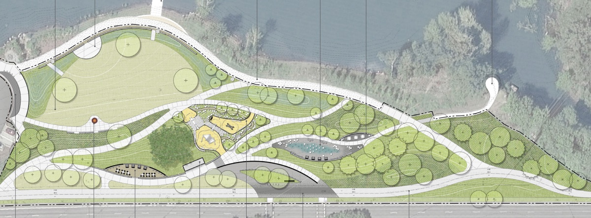

9/11/24: Your voices are making a difference!
In the agenda for tonight's District Advisory Committee there is a promising update about grant funding:
NCPRD staff has recently met with federal, state, and local grant partners to maintain the current grant funding. NCPRD is seeking a formal extension for our federal grant until fall 2026. This is the only grant with a firm deadline. The other grant partners have said they will follow. NCPRD budget resources for phase three improvements are still secure and still in the budget.
The report also states:
The Board of Directors have received several emails in support of completing phase three improvement at the park. These go into the Director log for community input.
But just because the funding is secure until 2026 does not mean our work is done. The park is still "on hold" while the Clackamas County Commissioners refuse to negotiate in good faith with the City of Milwaukie. Meanwhile construction costs continue to skyrocket due to inflation.
Here is the standard response email from the County Commissioners:
Phase three of Milwaukie Bay Park is on
pause because there’s been no progress on updating the intergovernmental
agreement between NCPRD and the City of Milwaukie. It is our understanding
the City is seeking to clarify an appropriate legal route for their potential future
withdrawal from the District. Before continuing construction, the district needs
assurance that should Milwaukie choose to depart, District investments are not
removed from district ownership at the expense of the rest of the District’s
taxpayers.
This doesn't make sense. If Milwaukie did leave the district, many things could indeed change. But ownership and accessibility of the park would not. The park is owned by the City, and would remain owned by the City whether or not the City leaves the district. The park is open to the public, and would remain open to the public regardless of whether or not the City leaves the district.
The City of Milwaukie is trying to negotiate in good faith with the County Commissioners, but they are refusing to come to the table.
From the Sep 3, 2024 City Council meeting:
Mayor Batey asked if the District Board would be open to
conversations with two Commissioners and two City Councilors to try to make progress on
Milwaukie Bay Park, but Director Savas clarified that they would not resume negotiations until
the appeal on the validation action is resolved or dropped.
Keep those emails to the County Commissioners coming! Tell them it's time to sit down with the City and work out a plan!
bcc@clackamas.us
Milwaukie Bay Park is a riverside oasis open to everyone. But
it's unfinished.
-
$2.4 million in grant money was secured years ago for
improvements that would make the park more accessible to
everyone. This money was intended to build bathrooms, plant
shade trees, construct a picnic area, playground, and a splash
pad at Milwaukie Bay Park.
See the final park design here
-
These grants include $370,000 in state grants, $1.5 million in
Metro grants, and $520,000 from the Land and Water
Conservation Fund
Source.
-
The Clackamas County Commissioners directed NCPRD to put the
project on hold in 2021.
-
According to the
project schedule, construction should have been completed by now.
Public transparency and accountability is lacking.
-
In 2021, the County Board of Commissioners directed NCPRD put
a “90-day hold on the project” as Commissioner Paul Savas was
concerned that Milwaukie could one day leave the North
Clackamas Parks and Recreation District. Tying this issue to
park construction is political theater. Regardless of whether
Milwaukie leaves the district, the park would remain equally
accessible to everyone.
-
For over two years now that “90-day hold” has been in place
and no planning or development has occurred. Meanwhile,
construction costs have skyrocketed with inflation and NCPRD
has focused parks development efforts on other projects, as
well as new master planning for the entire district.
-
For proof of this lack of transparency, see past web snapshots
of the park page from
June 01 2023
and
July 06 2024
which mention this "90 day hold".
-
Friends of Milwaukie Bay Park emailed NCPRD in August asking
about this 90 day hold, and for the website to be updated with
information about the status of the grant money. The email was
never answered.
-
Someone updated the
park page
in the past few weeks to remove the "90 days" wording, without
adding any details about project timing or acknowledging the
lapsing grant money.
We may lose this grant money due to fiscal mismanagement
-
This grant money was tied to construction deadlines, and this
grant money is at risk of being lost. [See the project schedule]
-
Allowing grant money to lapse may affect Milwaukie's ability
to secure grants in the future.
We need to untangle this from separate issues to move forward
-
You may hear a talking point from the County Commissioners
that construction is delayed because Milwaukie is pursuing
legal action against the county. Don't buy it. This is
misdirection.
-
The City is seeking clarification from the courts on whether
Milwaukie could hypothetically leave the district, but no
decision has been made on what the City may do in the future.
Since the park is a regional benefit to everyone, this open
question should not be an excuse to hold up construction.
-
It's time to separate these two issues, so that we can improve
a regional park that's of benefit to those all over Clackamas
County and beyond.
-
For a thorough background and timeline on the conflict between
the City of Milwaukie and the Clackamas County Commissioners,
see
July 18, 2024 Council Work Session
(search for “Parks Goal Update”) and
Sep 3, 2024 Council Work Session
(Search for "Milwaukie Bay Park").
We are Friends of Milwaukie Bay Park, a group of citizens who
want our leaders to put politics aside, and finish building what
we started.
We want Milwaukie Bay Park to be finished using the grant money
we already have.
What would a finished park look like? See for yourself! Images
sourced from the
NCPRD MBP Project Page
Planting more shade trees

Adding picnic areas

Stage

Water feature / Splash pad

Playground

Want to see your Milwaukie Bay Park look like this? See the next
section for what you can do!
Email the Clackamas County Commissioners
The county commissioners are elected to be accountable to the
people. Their email address is: BCC@clackamas.us.
Here are some ideas to get you started:
-
We want full transparency on the NCPRD's MBP website. No more
indefinite project holds.
-
Where's the Funding? We want commitments that you are doing
everything you can to save the $2.4 million in grant money.
-
We want to see a plan for resuming the construction phase and
building MBP.
Please send a carbon copy (cc) to the Milwaukie City Council at
citycouncil@milwaukieoregon.gov and the NCPRD District Advisory
Board at DAC@ncprd.com
Mayor Lisa Batey: It's Time to Move Forward With Construction
For Milwaukie Bay Park
Read the letter on page 2 of the August 2024 edition of the
Milwaukie Pilot (PDF Link)
Lisa Gunion-Rinker, Chair of the board of the Milwaukie Parks
Foundation: Finish building Milwaukie Bay Park
Read the letter to the editor (Link to article)
Milwaukie Parks Foundation - Why the Board of County
Commissioners should move forward to build Milwaukie Bay Park
Read more about the history of the park project, and some
suggested talking points when writing letters of support: (
Link to document)